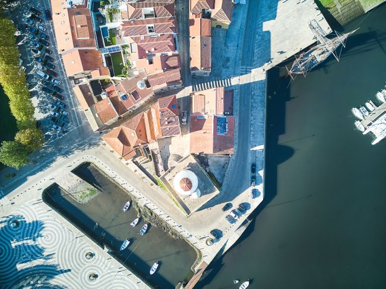
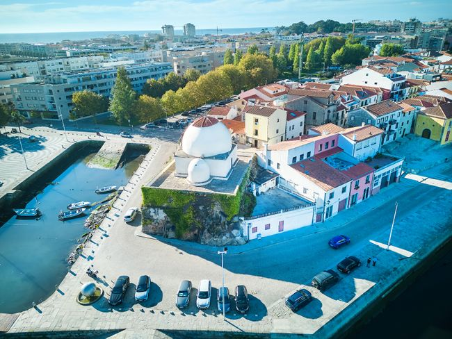
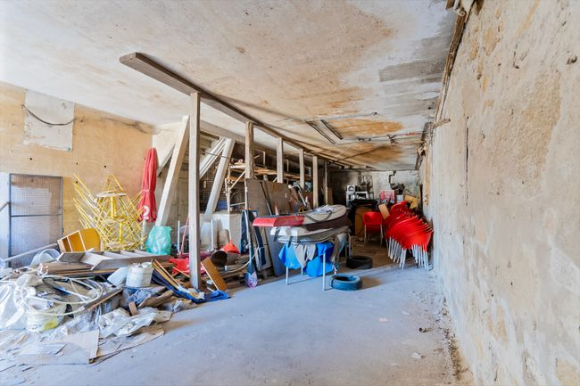
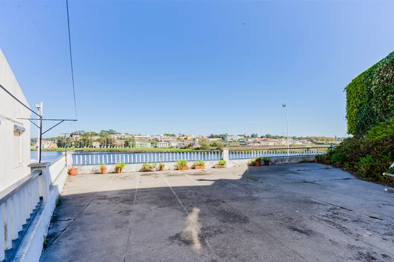
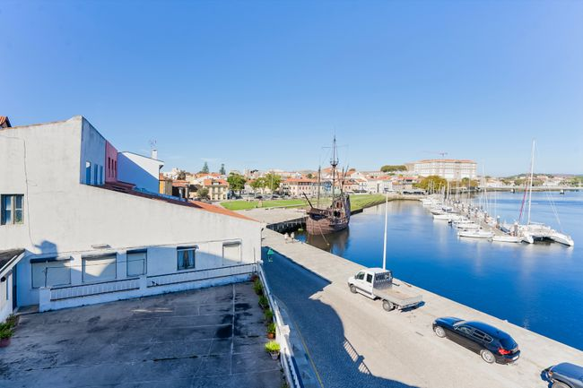
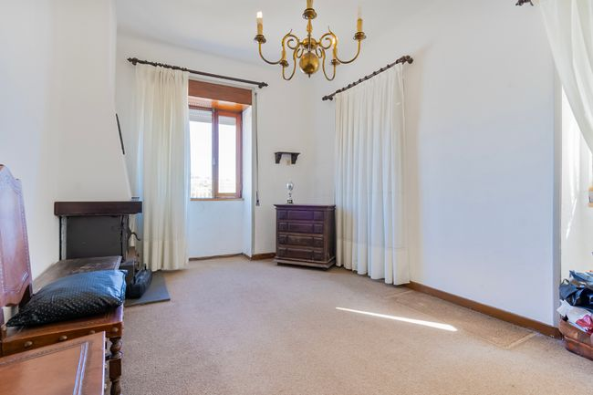
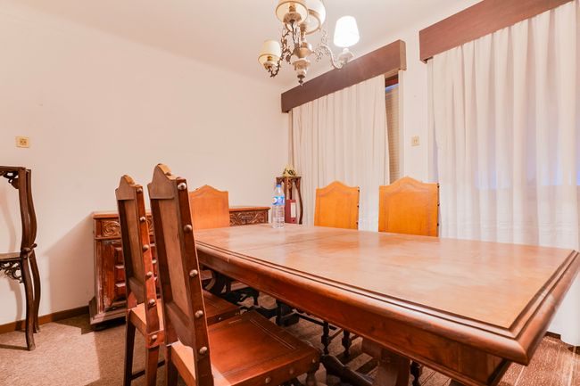
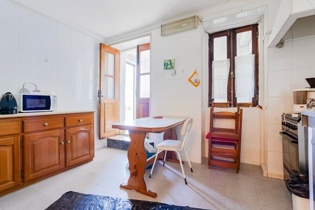
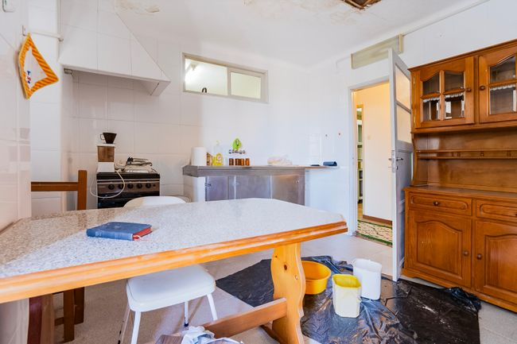
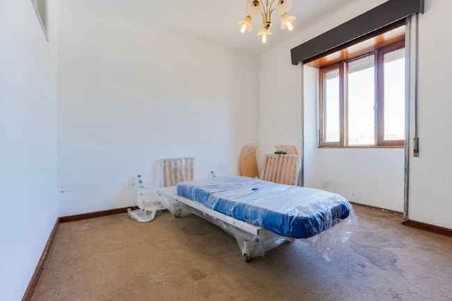

Casa principal
Espaço residencial com várias divisões, vista sobre o rio e forte potencial para reabilitação e reposicionamento.
Um ativo raro em Vila do Conde, composto por moradia principal, segunda casa e armazém, com vistas abertas sobre o Rio Ave e forte enquadramento para reabilitação residencial, turística ou empresarial.

Preço: 750.000 €
Localização: Vila do Conde
Tipologia anunciada: Conjunto imobiliário
Área útil: 436 m²
Área bruta: 446 m²
Área do lote: 312 m²
Composição: Casa principal, segunda casa e armazém
Enquadramento: Zona histórica com vista rio
Potencial: Reabilitação residencial, turística ou mista
Ano de construção: 1937
Elevador: Não
Este ativo não deve ser lido como uma simples moradia. Trata-se de um conjunto imobiliário com forte identidade, inserido numa das zonas mais emblemáticas de Vila do Conde e com relação direta ao Rio Ave e à frente ribeirinha.
A composição do conjunto, aliada à localização e à vista aberta, torna-o particularmente interessante para quem procura um projeto de reabilitação com visão de médio e longo prazo, seja numa lógica residencial, turística ou empresarial.
A raridade deste enquadramento, associada à presença de espaços exteriores amplos, áreas interiores com escala e frente visual sobre o rio, reforça claramente o seu potencial de valorização futura.
Espaço residencial com várias divisões, vista sobre o rio e forte potencial para reabilitação e reposicionamento.
Um corpo adicional que acrescenta autonomia, versatilidade e margem para diferentes leituras do ativo.
Área complementar com dimensão útil para apoio, armazenamento, estacionamento ou integração em projeto mais amplo.
Um enquadramento raro em Vila do Conde, com relação direta à frente ribeirinha e grande força visual.
Localização com forte identidade urbana, patrimonial e turística, difícil de replicar.
A presença de casa principal, segunda casa e armazém permite pensar o imóvel de forma mais ampla e estratégica.
Terraços e áreas exteriores com forte potencial de valorização no contexto de um projeto de reabilitação.
Enquadramento particularmente relevante para exploração turística, alojamento ou solução mista.
Um produto difícil de encontrar pelo conjunto de localização, vista, escala e potencial futuro.
Este imóvel faz sentido para investidores, promotores ou compradores com visão patrimonial, capazes de reconhecer o valor da localização, da composição do conjunto e do seu potencial de transformação.
Mais do que um imóvel pronto a habitar, está aqui um ativo com identidade, história e uma lógica clara de reabilitação e valorização.










Fale comigo para perceber melhor o enquadramento deste conjunto imobiliário e agendar uma visita ao local.